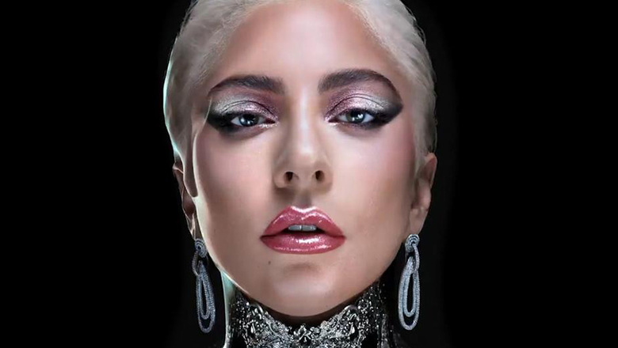

Леди Гага
Ле́ди Га́га (англ. Lady Gaga; настоящее имя — Сте́фани Джоа́нн Анджели́на Джермано́тта
(англ. Stefani Joanne Angelina Germanotta[3]), род. 28 марта 1986, Нью-Йорк[4])
— американская певица, автор песен, продюсер, филантроп, дизайнер и актриса.
Обладательница премии «Оскар» за лучшую песню в фильме «Звезда родилась»; номинантка
на «Оскар» в категории «Лучшая женская роль»[5]. Начинала свою карьеру с выступлений
в клубах, а к концу 2007 года продюсер Винсент Херберт подписал певицу на лейбл
Streamline Records, который является ответвлением Interscope Records. Изначально
Гага работала в качестве штатного автора Interscope, но после того, как вокальные
данные Гаги привлекли рэпера Эйкона, с ней был подписан контракт на запись альбома.
В 2008 году Леди Гага выпустила дебютный альбом The Fame, который стал коммерчески
успешным и был положительно принят критиками. Из альбома было выпущено пять синглов,
два из которых, «Just Dance» и «Poker Face», стали международными хитами, а «LoveGame»
и «Paparazzi» имели умеренный успех. В 2009 году был выпущен мини-альбом The Fame Monster,
распроданный большим тиражом как и его предшественник. Выпущенные из пластинки синглы
«Bad Romance», «Telephone» и «Alejandro», достигли высоких продаж во всём мире. Международный
тур в поддержку альбома The Monster Ball Tour стал одним из самых прибыльных шоу за всю историю.
Второй студийный альбом Born This Way возглавил чарты практически всех стран мира и стал
вторым по количеству продаж в 2011 году. В его поддержку было выпущено пять синглов,
четыре из которых стали международными хитами («Born This Way», «Judas» и «The Edge of Glory»)
или имели умеренный успех («Yoü and I»). Третий студийный альбом Artpop был выпущен 11 ноября
2013 года.
